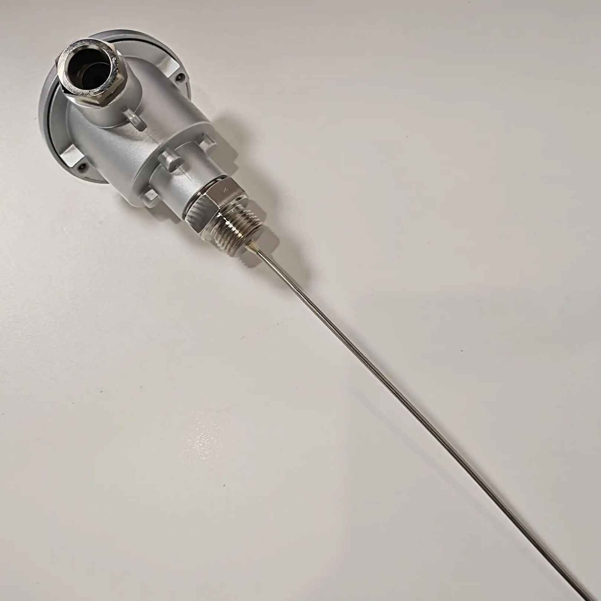

感知层
感知层是物联网的基础，主要负责数据的采集和监测。
常见设备包括温度传感器、湿度传感器、运动传感器等。
传输层
传输层负责将感知层收集到的数据进行传输。
常使用的传输技术有Wi-Fi、蓝牙、LoRaWAN等。
应用层
应用层是物联网系统的顶层，提供实际的应用和服务。
在这一层，用户可以通过应用程序访问和控制设备，实现智能管理。
技术比较
| 技术 | 特点 | 适用场景 |
|---|---|---|
| Wi-Fi | 高带宽，适合数据密集型应用 | 家庭自动化，视频监控 |
| 蓝牙 | 低功耗，短距离 | 穿戴设备，智能家居 |
| LoRaWAN | 远程通信，低功耗 | 智慧城市，农业监测 |